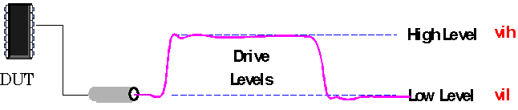

Drive Levels
For input (i) and input/output (i/o) pins, the level setup defines the high (vih) and low (vil) drive levels for input signals.

For input (i) and input/output (i/o) pins, the level setup defines the high (vih) and low (vil) drive levels for input signals.
